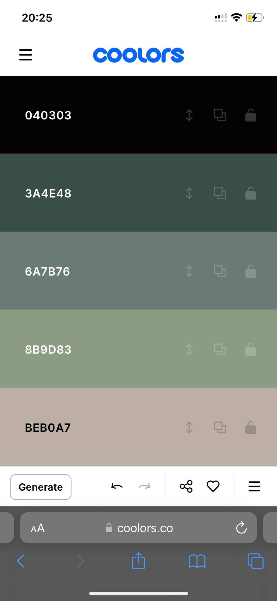
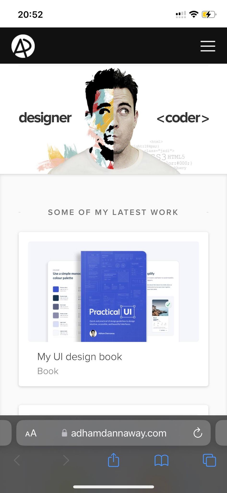

Design Principles
By: JT Pyle
Color Theory
coolors.co You know that feeling you get when you look at a website and the colors just seem a bit off?
I think of that feeling in my gut when I see it and think "this does not fit".
This all relates and comes into color theory. There are two diffrent meathods to find that color go together well
The first is called Analogous, or a series of similar colors together. The second is complementary or two colors on the oppisite
sides of the color wheel. complementary colors can be split into three or four seprate colors called a split or tetric complementary
If done right your user will be content with how the website looks and contrasts.
Visual Balance
adhamdannaway.com When creating a website our brains follow patterns naturally. If certian rules in the website are not followed it creates that uneasy feeling we all get. We always thing of ratios and where they need to go. If someone's eyes are too far apart we notice it and the diffrence is unsettling. This is the theory of Balance. The theory of balance has three diffrences, Weight, Spacing, and symetricality. "As said in the adobe video, Balance makes the message clear." If there is too many items in a website in one area it makes the rest of the website off.
Understanding Repetition
zox.laThere is an unspoken language that we go by that governs rules in a website also. When you look at a menu in a italian restaurnt where the words are all in a diffrent language how do you understand that the bold word that says "Antipasto" likely means something with pasta? These common themes draw attention to our eyes through repition. When creating a website repition is essential. Some things to repeat in a website are the header, the footer, aspects in specific photos, color themes, and logos.